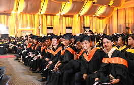

PUP Parañaque Honors Class of 2025 in 11th Commencement Exercises
The Polytechnic University of the Philippines Parañaque Campus reached another proud milestone as it held its 11th Commencement Exercises on October 20, 2025, at Le Pavillon in Pasay City. The event celebrated the...